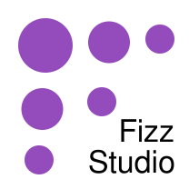

Structured Charts for Modern Workflows
Narrative Binding Table
| Phrase Fragment | Bound Structure |
|---|---|
| "Services" | Series: Services |
| "starts as the second highest line," | Series: Services Year: 2008 Rank: 2 of 3 |
| "crosses over Industry," | Series: Services > Industry Year: 2011 Relation: Order transition |
| "touches Industry," | Services = Industry (45.3) Year: 2012 Relation: Equality (tie) |
| "and ends as the highest line." | Series: Services Year: 2018 Rank: 1 of 3 |
Solution for static media
- Social media
- ParaCharts is developed by Fizz Studio.
- Paid pilot on Inclusio, an NSF-funded accessible graphics marketplace
- Active discussions with higher education and enterprise partners.
- NC IDEA MICRO funding supports pilot-to-license conversion and revenue validation.

Fizz Studio is transforming charts into tools people can think with.